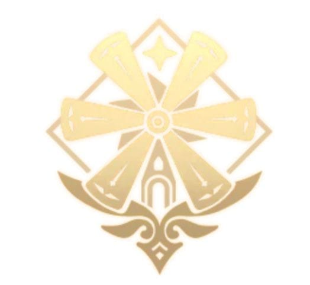
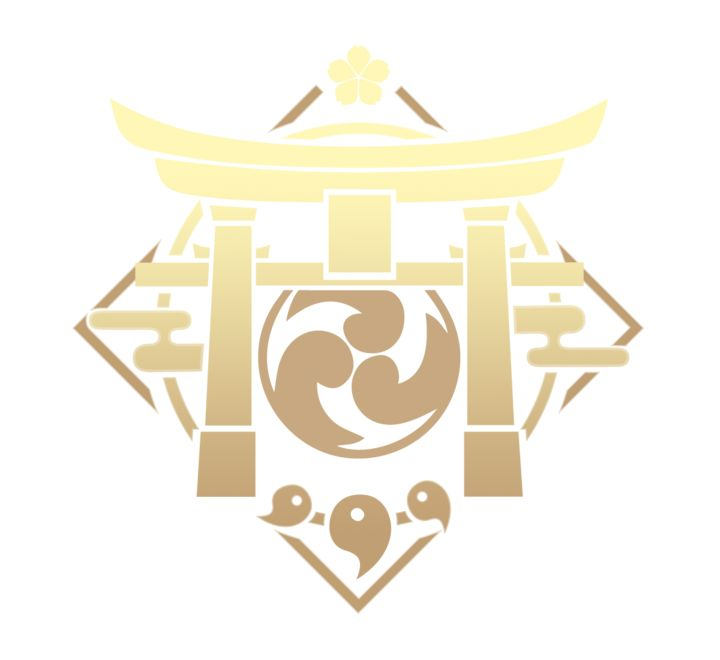

.png)
About
Genshin Impact is an open-world action role-playing game developed by HoYoverse. The game takes place in a fantasy world called Teyvat, which is divided into seven nations, each associated with a different element and ruled by an Archon. Players take the role of the Traveler, a mysterious character who travels across Teyvat in search of their lost sibling. Along the journey, the Traveler meets many characters, explores different regions, completes quests, and uncovers the hidden history of Teyvat. The game combines exploration, combat, character collection, puzzles, and storytelling, with each nation having its own culture, environment, characters, and central conflict.
Region
| 1. Mondstadt | |
 |
Mondstadt is the Nation of Freedom, ruled by Venti, the Anemo Archon. It is a peaceful land inspired by European culture, known for its wind, music, and freedom. The Traveler first arrives here and helps Venti save Dvalin, one of the Four Winds, who has been corrupted by the Abyss. The story introduces the Traveler to the world of Teyvat and shows how Venti believes that people should be free to choose their own path. |
| 2. Liyue | |
 |
Liyue is the Nation of Contracts, ruled by Zhongli, the Geo Archon. It is a prosperous nation centered around trade, traditions, and commerce. During the Rite of Descension, Rex Lapis suddenly appears to die, causing chaos in Liyue. The Traveler investigates the incident and becomes involved with the Fatui and the ancient god Osial. In the end, Liyue's people prove that they are capable of protecting their nation without depending entirely on their Archon. |
| 3. Inazuma | |
 |
Inazuma is the Nation of Eternity, ruled by Raiden Ei, the Electro Archon. Because Ei fears loss and change, she creates the Vision Hunt Decree and isolates Inazuma from the outside world. The Traveler joins the resistance against these policies and eventually confronts Ei. Through the conflict, Ei realizes that eternity cannot mean stopping all change, and that people must be allowed to pursue their own ambitions. |
| 4. Sumeru | |
 |
Sumeru is the Nation of Wisdom, ruled by Nahida, the Dendro Archon. It is home to the Akademiya, one of the greatest centers of knowledge in Teyvat. Despite being the Archon, Nahida is isolated and treated poorly by the Akademiya. The Traveler helps her fight against the Akademiya's plan to create a new god using Scaramouche. The story also reveals important truths about Greater Lord Rukkhadevata and the nature of knowledge and wisdom. |
| 5. Fontaine | |
 |
Fontaine is the Nation of Justice, associated with Furina and Focalors, the Hydro Archon. It is famous for its advanced technology, legal system, and theatrical trials. The Traveler becomes involved in investigating a prophecy that predicts Fontaine's destruction and the disappearance of its people. As the story progresses, the truth behind Furina, Focalors, and the Hydro Archon is revealed, leading to a major sacrifice that ultimately saves Fontaine. |
| 6. Natlan | |
 |
Natlan is the Nation of War, ruled by Mavuika, the Pyro Archon. Its people are divided into several tribes, but they share a strong warrior culture and a long history of fighting the Abyss. The Traveler joins Mavuika and Natlan's warriors in defending their homeland from the Abyssal threat. The story emphasizes courage, unity, sacrifice, and the determination to protect one's people. |
| 7. Snezhnaya | |
 |
Snezhnaya is the Nation of Love, ruled by the Tsaritsa, the Cryo Archon. It is the homeland of the Fatui, a powerful organization whose members have appeared throughout the Traveler's journey. The Tsaritsa has ordered the Fatui to collect the Gnoses from the other Archons, but her ultimate goal remains mysterious. Snezhnaya is expected to reveal more about the Fatui, the Tsaritsa's plan, and the larger conflict surrounding Teyvat. |